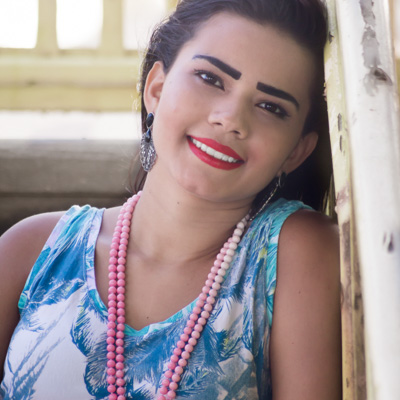
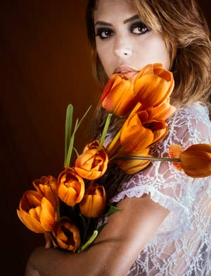

Karol Silva
- Modelo: Karol Silva
- Local: Praia do Balbino
- Fotógrafo: Robério Diógenes
- Ass. Fotografia: Miriam Sampaio
- Data: 10 de outubro de 2016
Karol Silva é uma modelo que foi retratada pelo Projeto Owsada em outubro de 2016 na bela praia da Caponga. Com um olhar cativante e um sorriso radiante, Karol encantou a equipe do projeto com sua beleza natural e seu charme único.
Durante a sessão fotográfica, Karol exibiu sua confiança e elegância, mostrando-se completamente à vontade diante das câmeras. As fotos capturaram a essência de sua personalidade vibrante e autêntica, imortalizando-a em imagens deslumbrantes.
Graças à sua beleza e carisma, Karol se destacou entre as modelos fotografadas pelo Projeto Owsada, deixando uma impressão duradoura na equipe e nas imagens finais. Sua participação no projeto foi uma homenagem à beleza feminina e uma celebração da individualidade de cada mulher.
- Modelo: Kalyna Dias
- Local: H'art 7 Agência Fotografica
- Fotógrafo: Robério Diógenes
- Data: 12 de dezembro de 2018
Bem-vindo à galeria de fotos da modelo, atriz e cosplay Kalyna Dias, que foi fotografada pelo renomado fotógrafo Robério Diógenes para o Projeto Owsada em dezembro de 2018 na H'art 7 Agência Fotográfica. Essa coleção de imagens traz à vida a beleza, a graça e a atitude únicas de Kalyna, capturadas com maestria pelas lentes de Diógenes.
Com sua presença vibrante e talento versátil, Kalyna tem conquistado o coração do público tanto no Brasil como no exterior. Além de seu trabalho como modelo, ela também é uma atriz habilidosa, tendo participado do filme experimental "Amor de Chocolate". Além disso, Kalyna é uma estrela em ascensão no mundo do cosplay, trazendo personagens icônicos da ficção para a vida com sua habilidade e criatividade.
É impossível olhar para essas fotos sem sentir uma sensação de admiração pela beleza e talento de Kalyna Dias. Não é de surpreender que ela tenha sido escolhida para trabalhar com marcas famosas e projetos criativos em todo o mundo, incluindo o site Suicide Girl.
Então, sem mais delongas, vamos mergulhar na coleção de fotos de Kalyna Dias, capturadas com perfeição pelo talentoso Robério Diógenes para o Projeto Owsada. Prepare-se para se apaixonar pela beleza e talento desta estrela em ascensão.
